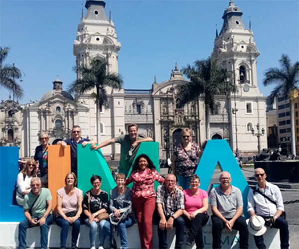
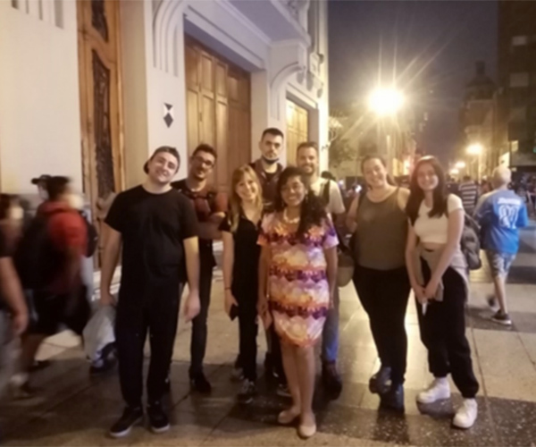
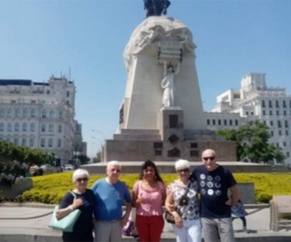
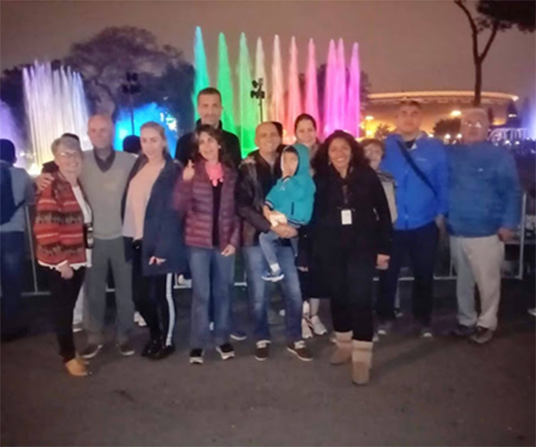

LARREA, ISABEL

Inicié mi trayectoria como guía de turismo motivada por mi pasión por la arqueología e historia del Perú. Tambien soy tour conductor y guía especializada en arqueología y turismo místico, haciendo que los viajeros sientan la esencia de cada lugar visitado. He viajado dentro y fuera del país, lo que ha ampliado mi visión y cultura. Les invito a conocer el Perú, a sentirse como en casa y llegar a amarlo tanto como yo lo amo.
I started my trajectory as a tour guide motivated by my passion for the archaeology and history of Peru. I am also a tour leader and guide specialized in archaeology and mystical tourism, making the travelers feel the essence of each place visited. I have traveled within and outside the country, which has increased my perspective and culture. I invite you to discover Peru, to feel at home, and to come to love it as much as I do.
Ho iniziato come guida turistica, spinta dalla passione per l'archeologia e la storia peruviana. Sono anche tour leader e guida turistica specializzata in turismo archeologico e mistico, aiuto i viaggiatori a vivere l'essenza di ogni luogo che visitano. Ho viaggiato sia in Perù che all'estero, ampliando così la mia prospettiva e la mia comprensione culturale. Vi invito a scoprire il Perù, a sentirvi a casa e ad amarlo tanto quanto lo amo io.
J'ai débuté comme guide touristique, animée par ma passion pour l'archéologie et l'histoire péruviennes. Je suis tour leader et guide spécialisée en archéologie et tourisme mystique, et j'aide les voyageurs à s'imprégner de l'essence même de chaque lieu visité. Mes voyages, tant au Pérou qu'à l'étranger, ont enrichi ma vision du monde et ma compréhension culturelle. Je vous invite à découvrir le Pérou, à vous y sentir comme chez vous et à l'aimer autant que moi.
Comecei como guia turístico, motivada pela minha paixão pela arqueologia e história peruanas. Trabalho como tour leader e guia, especializada em arqueologia e turismo místico, ajudando os viajantes a vivenciar a essência de cada lugar que visitam. Viajei pelo Peru quanto para o exterior, o que ampliou minha perspectiva e compreensão cultural. Convido você a descobrir o Peru, a se sentir em casa e a amá-lo tanto quanto eu.

{kind=link}

{kind=link}

{kind=link}

{kind=link}